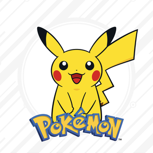
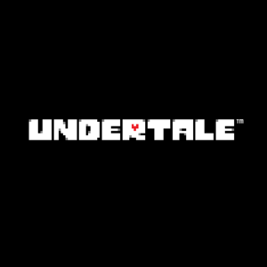
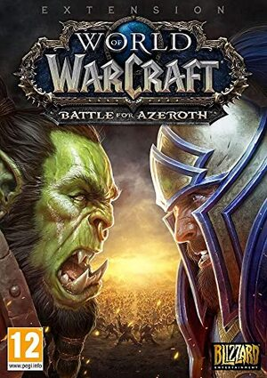

A Role-playing game is a game in which players assume the roles of characters in a fictional setting. Players take responsibility for acting out these roles within a narrative, either through literal acting or through a process of structured decision-making regarding character development. Actions taken within many games succeed or fail according to a formal system of rules and guidelines.
There are several forms of role-playing games:
In both of these forms, an arranger called a GM usually decides on the rules and setting to be used, while acting as the referee; each of the other players takes on the role of a single character.
Several varieties of RPG also exist in electronic media, such as:
The term role-playing game is also sometimes used to describe games involving roleplay simulation and exercises used in teaching, training, and academic research.
| Pokemon |  | |
The concept of the Pokémon universe stems from the hobby of insect collecting, a
popular pastime which Tajiri enjoyed as a child. Players are designated as
Pokémon Trainers and have three general goals:
|
||
|  | Undertale | |
| Undertale is a 2015 2D role-playing video game created by American indie developer Toby Fox. The player controls a child who has fallen into the Underground: a large, secluded region under the surface of the Earth, separated by a magical barrier. The player meets various monsters during the journey back to the surface, although some monsters might engage the player in a fight. The combat system involves the player navigating through mini-bullet hell attacks by the opponent. They can opt to pacify or subdue monsters in order to spare them instead of killing them. These choices affect the game, with the dialogue, characters, and story changing based on outcomes. | ||
| World of Warcraft |  | |
| WoW is a MMORPG released in 2004 by Blizzard Entertainment. Set in the Warcraft fantasy universe, World of Warcraft takes place within the world of Azeroth. Similar to other MMORPGs, the game allows players to create a character avatar and explore an open game world in third or first-person view, exploring the landscape, fighting various monsters, completing quests, and interacting with NPCs or other players. The game encourages players to work together to complete quests, enter dungeons and engage in PvP combat, however, the game can also be played solo without interacting with others. The game primarily focuses on character progression, in which players earn experience points to level up their character to make them more powerful and buy and sell items using in-game currency to acquire better equipment, among other game systems. | ||